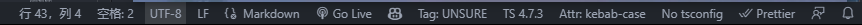

markdown syntax
Update history
| Date | Version | Author | Update content |
|---|---|---|---|
| 2021-09-19 | Plugin v2.10.3 | neucrack |
|
This article is a document written using
Markdown, using the page effect generated byteedoc, the source code ofMarkdownfile can be found here
Markdown using brief
The file placed under the document directory, if it is a recognized file, such as *.md, it will be converted to *.html, if it is not recognized, such as *.jpg, it will be copied intact into the output folder (out).
The default Markdown parsing is done by the plugin teedoc-plugin-markdown-parser, which is used by default in the template project.
If you need to link the documentation to the left directory, configure it in sidebar.json or sidebar.yaml.
If you have used Markdown, it is also highly recommended to spend 2 minutes browsing it!
Markdown basic content format
You need to confirm that a markdown parser plugin is enabled in site_config.json, such as teedoc-plugin-markdown-parser.
Create a folder or file in the directory corresponding to config.json, such as get_started/zh/syntax/syntax_markdown.md (README.md will eventually generate index.html), pay attention to use UTF- 8 file encoding (do not use Windows default Notepad), it is recommended to use vscode + Markdown Preview Enhanced plugin, the default file will be UTF-8Encoding, if not, you can also click the encoding in the lower right corner and click the pop-up option Save with encoding and select UTF-8 to change the encoding.

Markdown metadata header
Each md file can add a header, also called metadata (metadata in Chinese). The article information is set through these key values, and the format is yaml format. Of course, this file header is optional, or you can Do not write
---
title: markdown syntax
tags: teedoc, markdown, syntax
keywords: teedoc, markdown, syntax
desc: teedoc's markdown syntax introduction and examples
id: zh_readme
class: zh_readme
draft: false
# Start with a # sign to indicate a comment
---
title: the title of the article, can be used if there is no metadata header
# Article title
or
article title
===
keywords: Keywords, multiple keywords separated by commas,will be added to thehtmlheader, which is convenient for search engines to crawl, and will not be displayed on the page. Can also be written inyamllist format
keywords:
- teedoc
- markdown
- grammar
desc: The page description will be added to thehtmlheader and will not be displayed on the page, which is convenient for search engines to crawltags: article tags, which will be displayed on the page. Multiple tags are separated by commas,, or they can be written in the format ofyamllist, same askeywordsid: Theidof the page, which will be added to thehtmltag, such as<html id="zh_readme">...</html>, usually not needed, usually in a single page for a certain page It may be used when customizingcssalone, it will override the settings inconfig.jsonclass: pageclass, separated by commas,, can not be set, it will override the settings inconfig.json. For example, you can set thecssstyle of a specific page by setting this value. For specific supported styles, see theme plugin documentationlayout: The layout template used by the page. By default, the configuration in the theme plugin will be used. If you need to customize the layout of this page, you can set this parameter. The path is relative to the path set bylayout_root_dirinsite_config,layout_root_dirdefaults tolayout, so to uselayout/special_layout.htmljust fill inspecial_layout.html. For layout template syntax see layout documentationdate: the last update date, the format is2022-09-15- If not set: The last modification time of the file will be used by default. If it is a
gitrepository, it will automatically get the time of the last commit of the page fromgit. The system reads the last modified time (this is most likely inaccurate). In addition, ifupdateis filled with a value, the latest modification date inupdatewill be used - If you don't want to show the last modified date, disable it by setting the value to
false - If the
updatevalue is set, the value indatewill still be used first
- If not set: The last modification time of the file will be used by default. If it is a
update: update history, an update history table will be generated at the beginning of the article, format:
update:
- date: 2022-09-15
author: author1
version: 1.1.0
content: updated xxx
- date: 2022-08-05
author: author2
version: 1.0.0
content: updated xxx
update_open: display update history or not, defaulttrue, set tofalsewill collapse update history(supported by theme plugin)draft: Whether it is a draft, the default isfalse. If set totrue, this file will be ignored when generating the page.
Markdown content
The content is written in Markdown syntax, because the main title will be converted into a <h1> tag, so it is recommended to start with the second-level title in the content. Such a page has only one <h1> tag, which is convenient for search engines to crawl take, such as
---
title: teedoc
---
## Title one
content. . .
## title two
content. . .
title
Level 3 heading
Level 4 heading
Level 4 Heading 2
Level 4 Heading 3
Level 5 heading
Level 6 heading
Title custom id
Here the custom id is custom-id
Up to level 6 headings
Markdown source code, click to expand
### Level 3 heading
#### Level 4 heading
#### Level 4 Heading 2
#### Level 4 Heading 3
##### Level 5 heading
###### Level 6 heading
### Title custom id {#custom-id}
Here the custom `id` is `custom-id`
emphasis, italics, strikethrough
We only know that Earth has the environment for humans to live, and Mars, and maybe other planets.
Markdown source code, click to expand
We only know that **Earth** has the environment for humans to live, and ~~Mars~~, and maybe *other planets*.
separator
delimiter
---
***
Link
relative path, README.md file: ../README.md, will be automatically converted to index.html
relative path, md file: ./syntax_markdown.md, will be converted to a link at the end of .html of the document
absolute path, http file: https://. . . /beginner.ipynb, the original link, will not be modified
relative path, ipynb file: ./syntax_jupyter.ipynb, will be converted to a link at the end of .html of the document
Markdown source code, click to expand
[relative path, README.md file](../index.html)
[relative path, md file](./syntax_markdown.html)
[absolute path, http file](https://storage.googleapis.com/tensorflow_docs/docs-l10n/site/en-us/tutorials/quickstart/beginner.ipynb)
[relative path, ipynb file](./syntax_jupyter.html)
list
List item:
steamed stuffed bun
Steamed bun
Tea eggs
aaaaaaa
- Secondary list
- Secondary list
- Secondary list
- Three-level list
- Three-level list
*bbbbbb
Markdown source code, click to expand
List item:
* steamed stuffed bun
* Steamed bun
* Tea eggs
* aaaaaaa
* Secondary list
* Secondary list
* Secondary list
* Three-level list
* Three-level list
*bbbbbb
code snippet
This is an inline code print("hello"), or emphasis teedoc
print("hello")
print("world")
#include "stdio.h"
int main()
{
printf("hello world");
}
Markdown source code, click to expand
This is an inline code `print("hello")`, or emphasis `teedoc`
```python
print("hello")
print("world")
```
```c
#include "stdio.h"
int main()
{
printf("hello world");
}
```
Comment (quote block)
Below is a note
Here is a comment (
<blockquote></blockquote>)
this is the second line of the comment
# Here is the code snippet in the comment
print("hello")
Notes
comment nesting
comment nesting
Use markdown syntax in block quotes
The quarterly results look great!
- Revenue was off the chart.
- Profits were higher than ever.
Everything is going according to plan.
printf("hello");
Markdown source code, click to expand
Below is a note
> Here is a comment (`<blockquote></blockquote>`)
> this is the second line of the comment
```python
# Here is the code snippet in the comment
print("hello")
```
> Notes
> comment nesting
> comment nesting
Use markdown syntax in block quotes
> #### The quarterly results look great!
>
> - Revenue was off the chart.
> - Profits were higher than ever.
>
> *Everything* is going according to **plan**.
> ```c
> printf("hello");
> ```
warn
The following is a warning message
This is a warning message (
<blockquote class="spoiler"></blockquote>)
Markdown source code, click to expand
>! This is a warning message (`<blockquote class="spoiler"></blockquote>`)
Emoji
The emoji syntax is not currently supported, but you can directly copy the emoji from the emoji to the document, for example:
🍊 🍇 😀 😅 😇
superscript
H2O, y = x2
Markdown source code, click to expand
H~2~O, y = x^2^
picture
Resource files will be copied to the output folder (out), so the most important thing is how to reference them in the documentation
- The easiest and recommended method
Use relative paths:
Resource files can be placed in the corresponding directory of the document, such as documentdocs/get_started/zh, you can createdocs/get_started/zh/assets/images/logo.png,
Then use relative path references indocs/get_started/en/README.md, i.e. - Advanced method
This situation is suitable for multiple documents referencing resources in the same folder (url), which is convenient for maintaining multiple documents, such as multilingual translation, or reducingCDNtraffic consumption.
Use resources outside the document path, configured insite_config.json
This setting will copy the entire directory of{ "route": { "docs": { "/get_started/en/": "docs/get_started/en", }, "assets": { "/get_started/assets/": "docs/get_started/assets" } } }docs/get_started/assetsto/get_started/assets
So just use relative path references indocs/get_started/en/README.md, i.e.
To display this image, you need to set the route key in site_config.json


Markdown source code, click to expand


video
Use the HTML video tag directly:
<video src="https://****.com/***.mp4" controls="controls" preload="auto">your brower not support play video</video>
There is no video here, so it is blank, put in the correct video and it can be played
iframe embedded web page
The code shared by the general video platform can be used directly, you can set the width and height slightly
Markdown source code, click to expand
<iframe src="//player.bilibili.com/player.html?aid=52613549&bvid=BV144411J72P&cid=92076022&page=1" scrolling="no" border="0" frameborder="no" framespacing="0" allowfullscreen=" true" style="width:43vw;height:34vw;min-width: 85%;"> </iframe>
quote mark
I can cook I am proud. 1
This will be annotated at the end of the article
Markdown source code, click to expand
I can cook I am proud. [^ dry rice man]
[^ Dry Rice Man]: Lao Tzu said
This will be annotated at the end of the article
sheet
| Header 1 | Header 2 |
|---|---|
Cell 1 |
Cell 2 link |
| Cell 3 | Cell 4 |
Markdown source code, click to expand
| Header 1 | *Header* 2 |
| -------- | -------- |
| `Cell 1` | [Cell 2](http://example.com) link |
| Cell 3 | **Cell 4** |
task list
- Mission 1
- Mission 2
- Mission 3
- Mission 4
Markdown source code, click to expand
- [x] Mission 1
- [x] Mission 2
- [ ] Mission 3
- [ ] Mission 4
Title link (in-page jump)
For example, to jump to the title [iframe embedded web page] (#iframe-embedded web page), just
[iframe embedded web page](#iframe-embedded web page)
Here spaces are replaced with a minus sign -.
In addition, if the title can also customize the id, such as
## iframe embedded web page {#iframe-embed}
HTML
You can write HTML directly in the md file:
Markdown source code, click to expand
Note that there are no blank lines
<div class="hello">
hello <img src="../../assets/images/logo.png"/>
</div>
math
Supports tex and Latex syntax, as well as MathML tags
two spellings,
- One is inline, wrap the equation with the
$symbol, such as
The mass-energy equation $E=mc^2$ is familiar to everyone, right?
Markdown source code, click to expand
The mass-energy equation $E=mc^2$ is familiar to everyone, right?
- Another, block equation, wrap the equation with
$$, such as
Markdown source code, click to expand
$$
E=mc^2
$$
Other examples:
common:
When $a \ne 0$, there are two solutions to $ax^2 + bx + c = 0$ and they are
$$
x = {-b \pm \sqrt{b^2-4ac} \over 2a}.
$$
Markdown source code, click to expand
When $a \ne 0$, there are two solutions to $ax^2 + bx + c = 0$ and they are
$$
x = {-b \pm \sqrt{b^2-4ac} \over 2a}.
$$
Divide by:
$$ \require{enclose} \begin{array}{r} 13 \\[-3pt] 4 \enclose{longdiv}{52} \\[-3pt] \underline{4}\phantom{2} \\[-3pt] 12 \\[-3pt] \underline{12}\\0 \end{array}\\ $$Markdown source code, click to expand
$$
\require{enclose}
\begin{array}{r}
13 \\[-3pt]
4 \enclose{longdiv}{52} \\[-3pt]
\underline{4}\phantom{2} \\[-3pt]
12 \\[-3pt]
\underline{12}\\0
\end{array}\\
$$
Boxed:
$$ \bbox[#cde, 3px,border:1px solid blue]{y=x^2-1} $$Markdown source code, click to expand
$$
\bbox[#cde, 3px,border:1px solid blue]{y=x^2-1}
$$
mermaid support
Use mermaid to draw many types of charts. For detailed syntax and support, please see official website
Markdown source code, click to expand
```mermaid
sequenceDiagram
Alice->>John: Hello John, how are you?
loop Healthcheck
John->>John: Fight against hypochondria
end
Note right of John: Rational thoughts!
John-->>Alice: Great!
John->>Bob: How about you?
Bob-->>John: Jolly good!
```
Or directly html:
<div class="mermaid">
sequenceDiagram
Alice->>John: Hello John, how are you?
loop Healthcheck
John->>John: Fight against hypochondria
end
Note right of John: Rational thoughts!
John-->>Alice: Great!
John->>Bob: How about you?
Bob-->>John: Jolly good!
</div>
Tab page (tabset) support
Because it is not a standard Markdown syntax, currently only supported by teedoc, so choose to use it according to your needs
Of course, generalization of the format to other parsers is also welcome
Effect:
Content 1, you can use Markdown syntax
fun main() {
println("Hello World")
}
Content 2, you can use Markdown syntax
public class Main {
public static void main(String[] args) {
System.out.println("Hello World");
}
}
When selecting a tag in a page, the corresponding tag in the tag page with the same id will be automatically selected, but not if the id is different or the id is not set.
Content 1, you can use Markdown syntax
fun main() {
println("Hello World")
}
Content 2, you can use Markdown syntax
public class Main {
public static void main(String[] args) {
System.out.println("Hello World");
}
}
Content 1, you can use Markdown syntax
fun main() {
println("Hello World")
}
Content 2, you can use Markdown syntax
public class Main {
public static void main(String[] args) {
System.out.println("Hello World");
}
}
Markdown source code, click to expand
Effect:
(note that a blank line is required here)
.. tabset::tab title (optional)
:id: tabset1
(note that it must be aligned with the above tabset or more spaces)
## Label one
Content 1, you can use Markdown syntax
```kotlin
fun main() {
println("Hello World")
}
```
## Label two
Content 2, you can use Markdown syntax
```java
public class Main {
public static void main(String[] args) {
System.out.println("Hello World");
}
}
```
Details page (details) support
Because it is not a standard Markdown syntax, currently only supported by teedoc, so choose to use it according to your needs
Of course, generalization of the format to other parsers is also welcome
This is a Markdown syntax for HTML5 details tags, HTML is written like this:
<details>
<summary>Title, click to expand</summary>
<div class="details-content">
<p>This is the content</p>
</div>
</details>
Effect:
Title, click to expand
Content 1, you can use Markdown syntax
fun main() {
println("Hello World")
}
title, expanded by default
Content 1, you can use Markdown syntax
fun main() {
println("Hello World")
}
Markdown source code, click to expand
.. details::Title, click to expand
Content 1, you can use Markdown syntax
```kotlin
fun main() {
println("Hello World")
}
```
.. details:: title, expanded by default
:open:true
Content 1, you can use Markdown syntax
```kotlin
fun main() {
println("Hello World")
}
```
Lao Tzu said↩